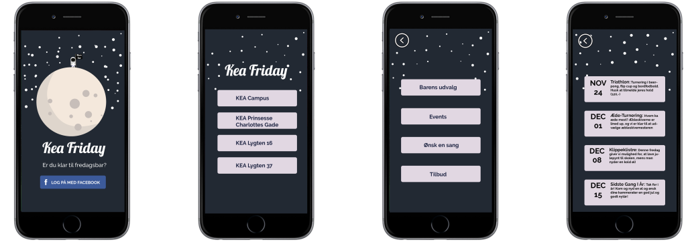

I det første forløb af grundlæggende UX skulle vi i samarbejde med KEA’s ledelse lave en en prototype til en app til gavn for de studerende på KEA. Før vi begyndte reelt på idegenereringen blev der lavet en brugerundersøgelse på os studerende fra holdet for at indsamle noget data om målgruppen. Derefter skulle vi i gruppen udtrække de vigtigeste elementer resultatet fra brugerundersøgelsen og designe et experiencemap, som blev kogt ned til vores 3 hovedideer: Kantine app, Fredagsbar app og Skema app, samt udarbejde en persona som vi kunne tage udgangspunkt i. Derefter gik design charette igang, der gik ud på at vi hver havde 7 minutter til at skitserer en idé til hver app.
Til hver idé skulle der også udarbejdes til storybord med henblik på hvornår appen ville have relevans at benytte sig af samt lave paper prototypes, som skulle testet af på vores medstuderende. Efter alle tests var kørt igennem og vi var kommet frem til vores endelig ide - som blev KeaFriday, skulle appen designes i Adobe xD og gøres interaktiv og man kunne navigere rundt i den.
Udover design af app skulle der også udarbejdes et dokumentationssite som dokumenterede vores proces samt et præsentationssite som fremviste vores app. Link til vores dokumentationssite kan findes her:Torsdag d. 30 november var dagen vi skulle pitche og sælge vores endelig produkt. Dette blev gjort ud fra NABC modellen foran KEA’s ledelse.
Værktøjer anvendt: Adobe XD, Photoshop, HTML, CSS.